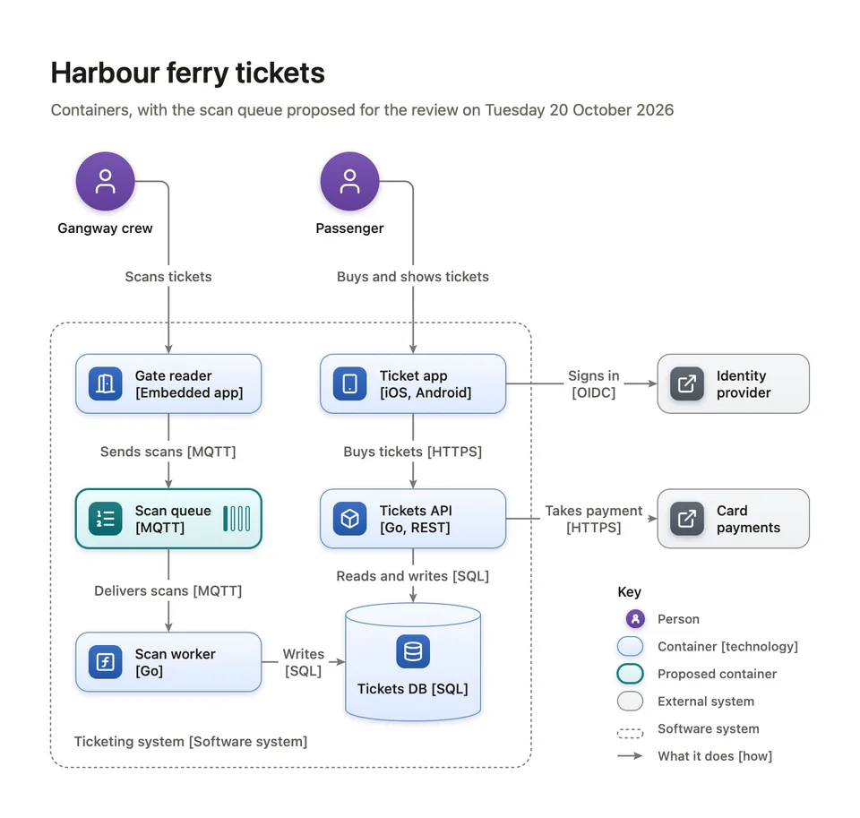
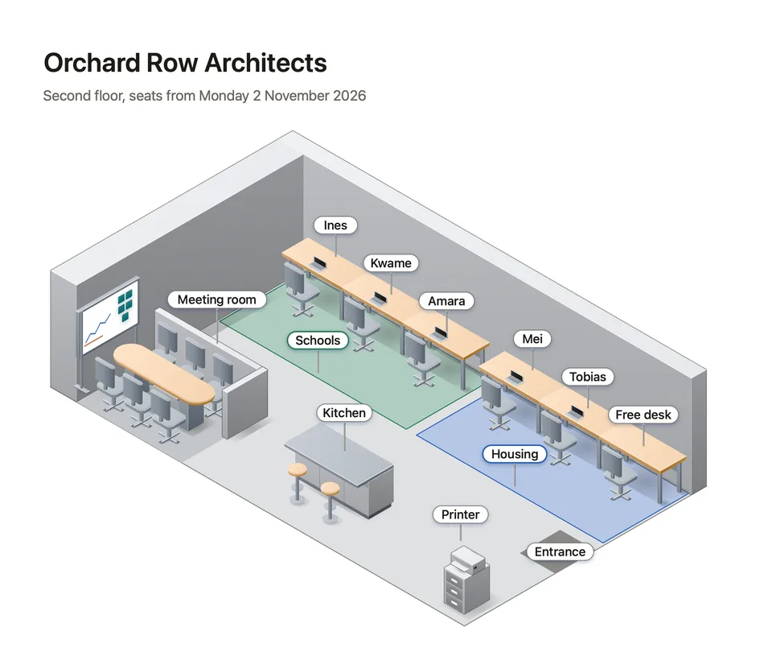
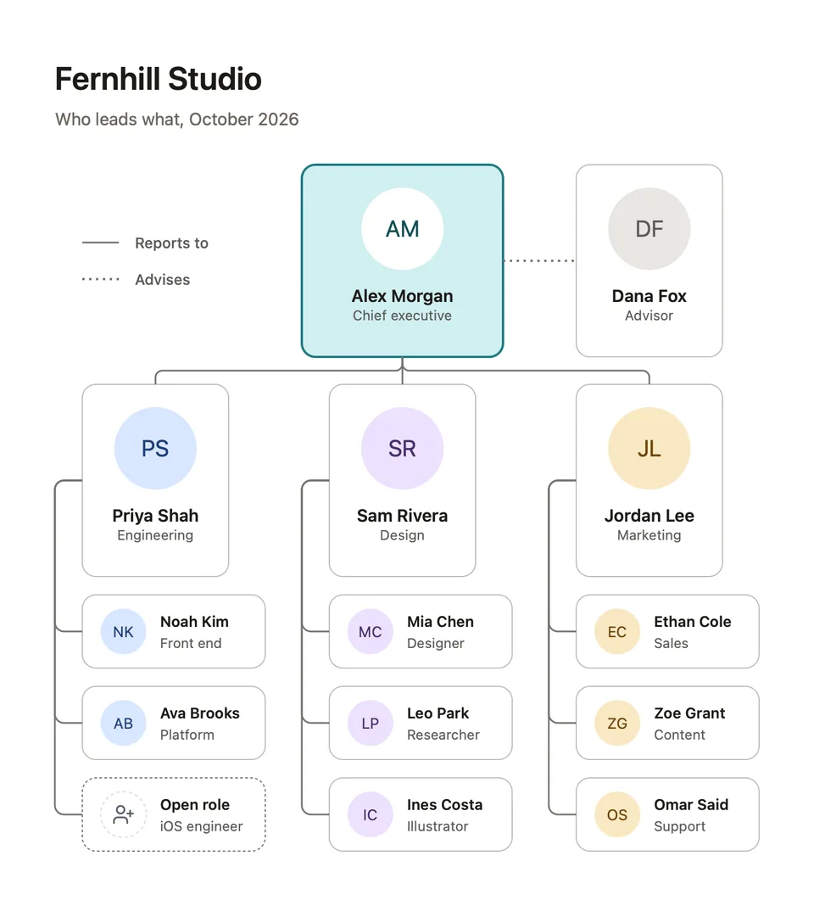

図 ARTICLE — DIAGROVE
How to draw a clear flowchart
One question, four shapes, every exit labelled, no line through a box.
NINJAAPPS.NET

One question, four shapes, every exit labelled, no line through a box.
One reader, one level, every arrow labelled, the boundaries drawn.

To scale, two back walls, teams in colour on the floor, labels that face you.

Reports stacked under their lead, so a new hire is one more row.
